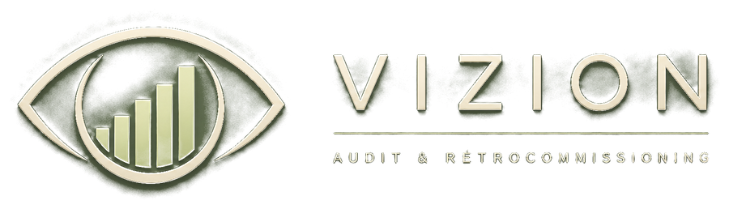

Plateforme de récolte de données pour audit énergétique et rétrocommissioning.
Audit énergétique
Informations sur les équipements, logements, restaurants, etc.
Rétrocommissioning
Évaluation complète, réglages et ajustements des systèmes.